Contents
- 1. What is YouTube Channel Description
- 2. Why is the YouTube Channel Description essential?
- 3. The first 125 characters are crucial
- 4. Insert keywords that your audience is searching
- 5. Include Powerful Call-to-action
- 6. Disclose the type of video you create on your channel
- 7. Include the upload schedule of your channel
- 8. Add channel section
- 9. Create relevancy between your channel and videos
- 10. Ahrefs
- 11. South Main Auto Repair
- 12. Brian Dean
- 13. Ross Simmonds
What is YouTube Channel Description
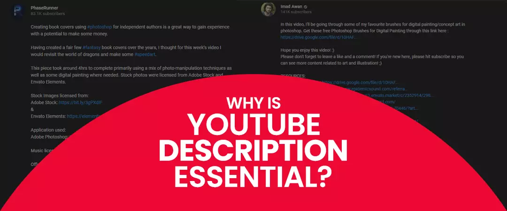
YouTube description summarizes your channel and the content that gets uploaded on it. You can find it under the about section of any YT channel. Under the about section, the description shares space with links, stats, featured and related channels, and other details such as business emails and location. You have to wrap up your description within 200 words as the description section permits up to 1000 characters.
Why is the YouTube Channel Description essential?
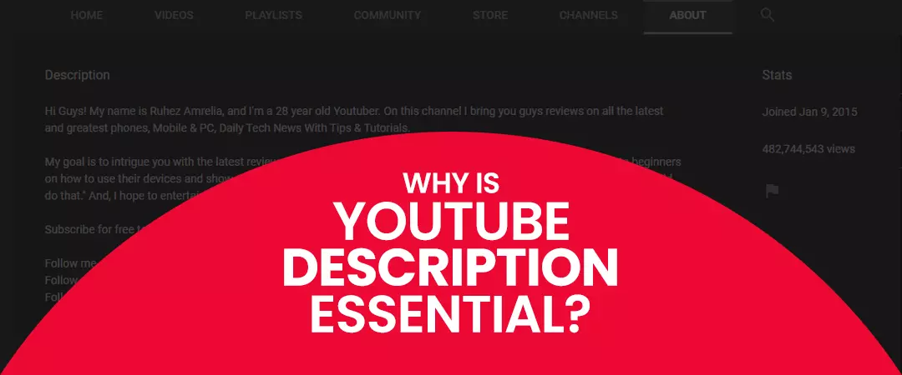
Admittedly at times, it may feel that your channel description is not essential. You would think that your visitors would rather be interested in watching the channel trailer than reading the description. Nothing could be farther from the truth. Besides being a tool to provide information about your channel and videos, channel descriptions can also convert your visitors to subscribers. Since the description of your YouTube channel appears in Google and YT search results - it could be your final opportunity to get people to click-through and visit your channel.
Just the fact that YouTube is one of the most prominent search engines on the planet, second only to Google, should be reason enough to optimize every aspect of your channel to gain maximum traction. Your targeted audience will be among the 2 billion active logins the platform receives every month. Your channel description is a quick communication with your audience about your channel and your content, with a high potential of gaining a new audience.
How to Write Best Description for YouTube Channel?
The first 125 characters are crucial
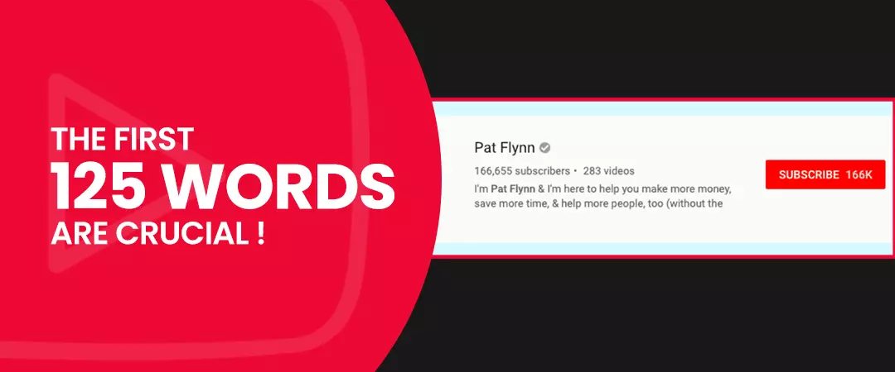
The first three sentences or 125 characters are crucial since this portion shows up in more places than any other part of the description. More importantly, this is the part that appears in YT search results - people can read this even before they click your video. Hence you have to make sure you put your best foot forward from the start.
Insert keywords that your audience is searching
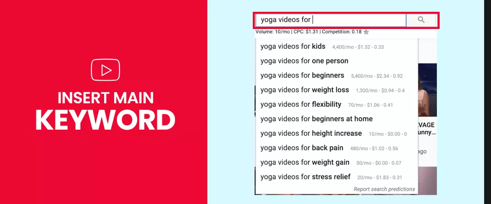
Video with keywords that match the user's search terms has a higher chance of appearing in the YT SERPs. For example, for a user's search query "home workout for beginners," videos that show up in the search results have keywords similar to the search term. The ranking criteria for videos and channels are similar and different simultaneously - both work on your keyword placement. But when ranking a YT channel, the algorithm puts more emphasis on terms included in your channel description.
You can use tools such as Google keyword planner and Google trends to find keywords used by your audience. You can also use this platform’s search feature to find long-tail keywords - phrases that are relevant to your channel and consist of three or more characters. Once you find the search terms, scatter them into your description for the YouTube channel. Create a compelling description by making sure your keywords naturally fit into your writing. Please do not make it look spammy or robotic to YT by stuffing keywords.
Include Powerful Call-to-action
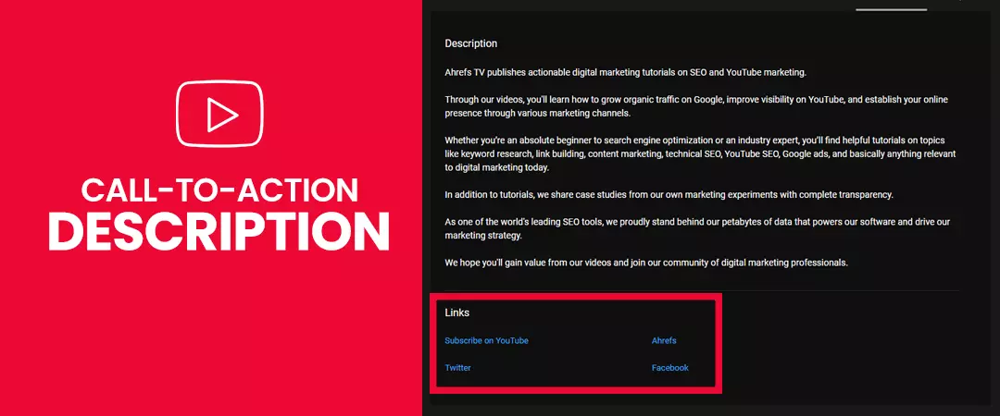
An adequate description is not complete without a compelling call to action the description of your YouTube channel will give the best results when you ask your visitors to do something. Asking people to subscribe to your channel or sign up for your newsletter or even visit your web and social platforms is a compelling call to action to include in your channel description.
Be clear on your goals before entering a call to action. Clarity of your objective will help you make an informed decision. For example: "if you like our video make sure to subscribe and press the bell icon never to miss future videos" - can be your call to action if your goal is to increase your subscriber count. "I send regular updates to our email list, click below to subscribe to our newsletter" - this is an ideal call to action if you want to grow your leads.
Disclose the type of video you create on your channel
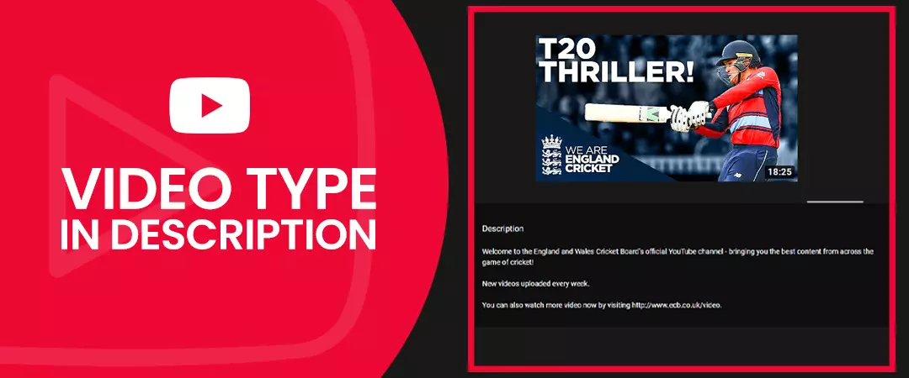
This part is simple and straightforward. Add high-performing videos to your channel description - videos that bring value to your viewers. You can tell your audience about the types of videos you produce – they could be tutorials, educational content, sports, product demonstrations, etc. You can update the description of your channel as you witness the growth and see more videos pile up.
Include the upload schedule of your channel
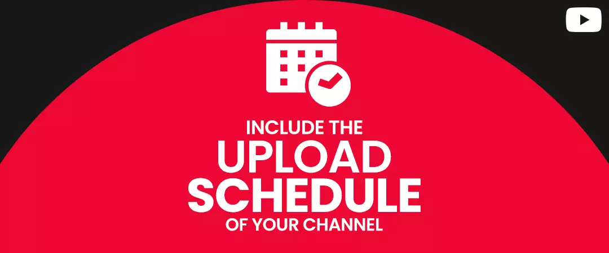
The best YouTube channel description takes care of small details. Like the video type, your upload schedule is also crucial to compel your audience to return to your channel. Including your upload schedule seems like a simple enough step, but be mindful not to make a promise that you cannot keep; you have to stick to the plan that you have disclosed in your description. Here you have the freedom to be blunt; a snippet saying "new YouTube videos every Monday at 10:00 a.m." will do the job perfectly .
Valuable Insights to attract more audience through YouTube channel description
Now, since you know all the nitty-gritty of an exemplary channel description, let's look at some additional points that will make your channel even more attractive to your audience.
Add channel section
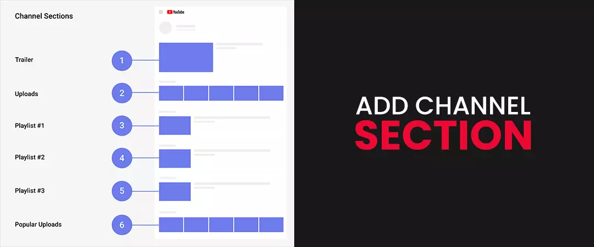
With your scheduling game going strong and having a couple of videos on a channel, one best practice will be to organize them into sections to increase visibility. For example, if you are a health and fitness channel, you can create a section representing fitness, nutrition, diet, etc.
Create relevancy between your channel and videos
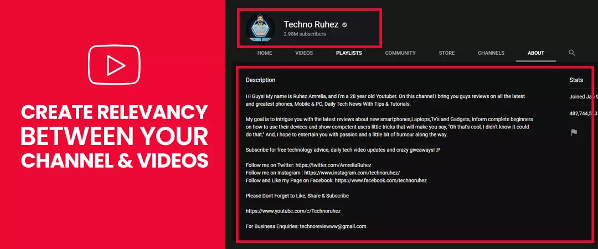
As your channel starts gathering more videos, it becomes essential to relate your videos to your channel. When viewers look at your thumbnails, they should easily associate your videos to your channel. One way is to create eye-catching introductions for all of your videos and screengrab a part to use as your thumbnail.
YouTube Channel Description examples
Ahrefs
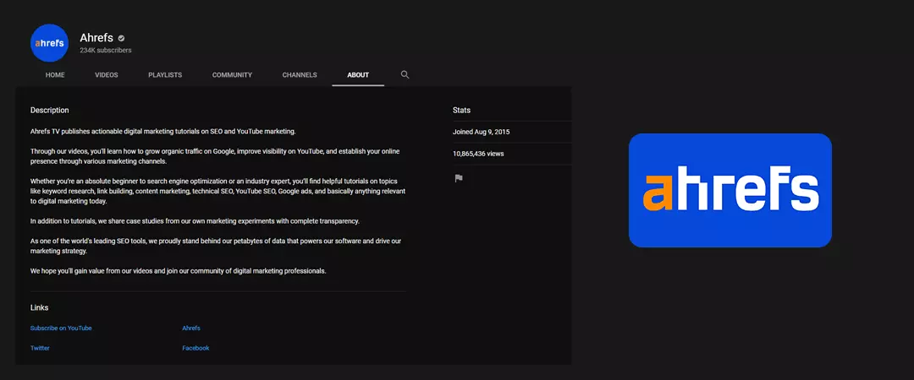
For popular SEO tool provider Ahrefs, posting schedules do not take priority in the channel description. Instead, they have included the terms utilized by their target audience, making it easier for them to gain clarity about the channel. Their confidence reflects in their description, and they have also included a solid call to action.
South Main Auto Repair
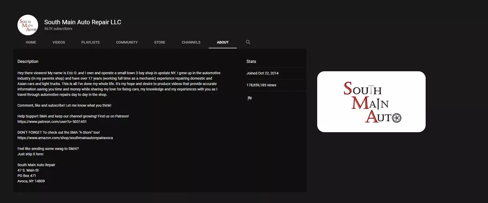
Eric O is the owner of an auto repair shop and also the admin of the South main auto repair YT channel. The channel has a subscriber count of 250 thousand. But looking at the way he has designed his channel description, Erik doesn't beat around the bush. His channel description is laser-focused towards his audience. He gives a brief introduction about himself and talks about his level of expertise - all the details needed by his audience to make an informed decision, saving time and money in the process.
Brian Dean
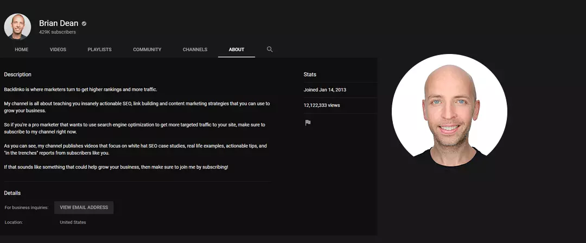
Brian Dean from Backlinko has a focused and straightforward channel description that speaks directly to its target audience, resulting in a higher ranking of YT as SERP. Brian's channel descriptions cover the points we have discussed above; he has included details about the types of videos he makes and critical topics that he covers on his channel. In the end, he has also included a call to action. With his straightforward approach, he has created one of the best descriptions for YouTube channels.
Ross Simmonds
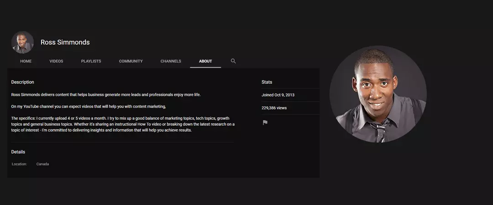
A B2B strategist, Ross Simmonds has built a solid personal brand for himself, widely known as the founder of foundation marketing, it’s no surprise that he uses his channel description to introduce himself. Ross has also included his uploading schedule with 3 - 4 categories that he covers on his channel. The style in which he showcases his desire to deliver content that guarantees results for his audience is amicable.
I hope you found this as a helpful guide to writing the perfect Youtube Channel Description in 2021.
Feel free to share.